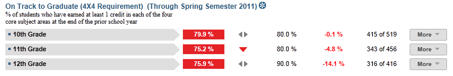
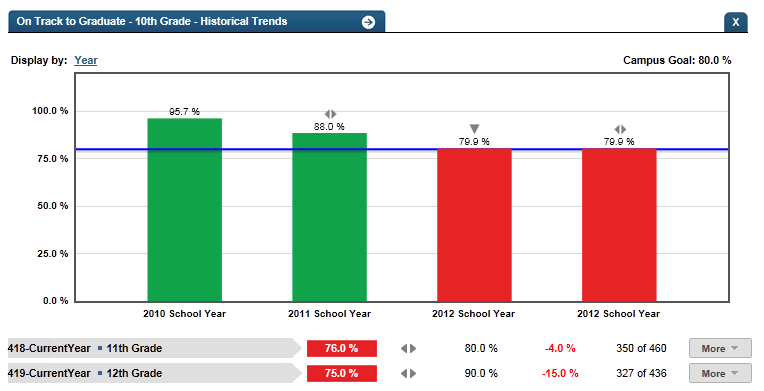

Dashboard Metrics


On Track to Graduate (4X4 Requirement)
Background
Campus Dashboard Metrics
In order to monitor student progress toward completion of graduation requirements, many school districts across the nation, including Chicago, Dallas and New York, have incorporated metrics on credit accumulation and other “on track” indicators into their internal performance management dashboards. In addition, during focus groups conducted with educators, the On Track to Graduate metric, as presented in screen shots of the campus dashboard, was considered useful by 95% of those surveyed.
Although graduation requirements vary by state, the general principles applied in the campus dashboard and data model for credit accumulation and on track indicators would be applicable to any state or district.
Primary Metric
- On Track to Graduate: percent of students in the 10th, 11th and 12th grades who are on track to meet the 4x4 graduation requirements of earning one credit per year in each of the four core subjects, based on courses completed as of the prior year.
Related Metrics
- Credit Accumulation: percent of students in the 10th, 11th and 12th grades earning the required number of credits under the Recommended graduation plan (26 total credits before graduation) as of the end of the most recent grading period.
- High School Graduation Plan: percent of students on each graduation plan (Minimum, Recommended or Distinguished), with comparison to campus goals for each.
- Falling Class Grade: percent of students with a core course grade, as of the most recent grading period, that dropped 10% or more from the grading period prior to the most recent.
- Repeat Courses: percent of students repeating a course due to course failure.
- Class Grades Below C Level: percent of students with one, two and three or more course grades below C for the most recent grading period.
User Interface
Dashboard Example
Figure 1 shows the On Track to Graduate metric as seen on the campus dashboard.

Figure 1 Ed-Fi On Track to Graduate (4x4 Requirement) Metric
Status Definition on Dashboard
The Status column is the percentage of students on track to earn at least one credit per year of the state- and district-approved courses in four core subject areas as defined as the “4x4 requirement”. The metric is the percentage of students meeting 4x4 requirement for graduation at each grade level starting at the 10th grade. Starting with the 2007-2008 school year, graduation requirements (in the recommended and distinguished plans) require that students pass four credits each of English, Mathematics, and Science and Social Studies subject areas.
The Goal column is configurable and has a default value of 80%, 80%, and 90% of students that have earned at least one credit per year for each core subject.
Table 2 defines the threshold color indicators. The actual value is displayed with the indicator.
| Metric Status Indicator | Comparisons | |||
Metric Title | Metric Sub-metric | Metric Status Indicator | Trend | Campus Goal (Delta) |
| On Track to Graduate (4X4 Requirement) | 10th Grade | Red (Percentage) = if percentage of students who earned at least 1 credit in each of the four core subject areas at the end of the prior school year is less than 80% Green (Percentage) = if percentage of students who earned at least 1 credit in each of the four core subject areas at the end of the prior school year is greater than or equal to 80%. | Current year to prior year | Campus Goal and the calculated percentage of students who earned at least 1 credit in each of the four core subject areas at the end of the prior school year |
| 11th Grade | Red (Percentage) = if percentage of students who earned at least 1 credit in each of the four core subject areas at the end of the prior school year is less than 80% Green (Percentage) = if percentage of students who earned at least 1 credit in each of the four core subject areas at the end of the prior school year is greater than or equal to 80%. | Current year to prior year | Campus Goal and the calculated percentage of students who earned at least 1 credit in each of the four core subject areas at the end of the prior school year | |
| 12th Grade | Red (Percentage) = if percentage of students who earned at least 1 credit in each of the four core subject areas at the end of the prior school year is less than 80% Green (Percentage) = if percentage of students who earned at least 1 credit in each of the four core subject areas at the end of the prior school year is greater than or equal to 80%. . | Current year to prior year | Campus Goal and the calculated percentage of students who earned at least 1 credit in each of the four core subject areas at the end of the prior school year | |
a) The number of students who earned at least 1 credit in each of the four core subject areas at the end of the prior school year out of the total number of students is displayed in the Value column.
Trend Definition
Trend Indicators: Objective is to indicate On-Track to Graduate | |||
| Up green | If the value for the current time frame is more than 5 percentage points higher than the prior time frame, then display a gray arrow trending upward. | |
| Unchanged | If the value for the current time frame is less than or equal to 5 percentage points higher or less than or equal to 5 percentage points lower, then display two gray arrows pointing outward indicating no direction. | |
| Down red | If the value for the current time frame is more than 5 percentage points lower than the prior time frame, then display a gray arrow trending downward. | |
The trend does not show for the first occurrence of a time frame since data is not available.
Delta Definition
The Delta column is the absolute value of the difference between the campus percentage (Status column) and the campus goal (Goal column).
Delta Indicators: Objective is to indicate On Track to Graduate | |||
Metric Name | Sub-Metric Name | Campus Goal | Delta |
| On Track to Graduate | 10th Grade | Set Campus Goal (Default is 80%) | Red (Delta Percentage) = if the students who earned at least 1 credit in each of the four core subject areas at the end of the prior school year is less than the set Goal Black( Delta Percentage) = if the students who earned at least 1 credit in each of the four core subject areas at the end of the prior school year is more than the set Goal |
| 11th Grade | Set Campus Goal (Default is 80%) | Red (Delta Percentage) = if the students who earned at least 1 credit in each of the four core subject areas at the end of the prior school year is less than the set Goal Black( Delta Percentage) = if the students who earned at least 1 credit in each of the four core subject areas at the end of the prior school year is more than the set Goal | |
| 12th Grade | Set Campus Goal (Default is 90%) | Red (Delta Percentage) = if the students who earned at least 1 credit in each of the four core subject areas at the end of the prior school year is less than the set Goal Black( Delta Percentage) = if the students who earned at least 1 credit in each of the four core subject areas at the end of the prior school year is more than the set Goal | |
Periodicity
Best practice is to load the data for this metric as soon as a semester grading period has ended and transcript information is updated. At minimum, load this information prior to the beginning of a school year to assess any scheduling and/or targeted intervention required.
Recommended Load Characteristics | |
Calendar | Throughout school year |
Frequency of data load | End of each grading period |
Latency | 6-9 weeks |
Interchange schema | Interchange-StudentGrade.xsd |
Tooltips
The standard tool tips for the metric definition, column headers, and help functions display for this metric.
 is ‘No change from the prior period'
is ‘No change from the prior period' is ‘Getting worse from the prior period’
is ‘Getting worse from the prior period’ is 'Getting better from the prior period'
is 'Getting better from the prior period'
Business Rules
The On Track to Graduate (4x4) metric is a requirement beginning with students who entered the ninth grade during the 2007 – 2008 school year.
This metric tracks the percentage of students that have earned at least one credit per year for each of the four core subjects, selected from:
- State-defined core subject courses that are indicated by state requirements as counting toward graduation credits
- Locally-defined courses by the district approved to count toward the core subject requirement
- Special education courses approved by the district to count toward the core subject requirement
The student is on track to graduate at the beginning of the year if their prior year cumulative credits in each of the four core subject areas meet the criteria shown in Table 6.
Student’s Current Grade | Yearly Target at Start of Year |
|---|---|
10 | 1 |
11 | 2 |
12 | 3 |
The metric is not applicable for 9th graders.
If a student is missing a year or more of data from their transcript, that student is not included in the cohort.
If the Middle School campuses send the transcripts for High School credits earned, these credits are considered in this metric.
References:
A Report on Exemption of Courses for Extracurricular Activities http://ritter.tea.state.tx.us/comm/leg_reports/2008/08exemp_courses.pdf
Graduation Requirements http://ritter.tea.state.tx.us/rules/tac/chapter074/ch074b.html
Curriculum Requirements http://ritter.tea.state.tx.us/rules/tac/chapter074/ch074c.html#74.29
Data Assumptions
- The student’s transcript must reflect the credits earned per class per year.
- State defined courses, locally-defined courses, and special education courses that count toward the 4x4 graduation requirement must be identified and categorized by subject area.
Computed Values
Table 7 defines how values on the campus dashboard are calculated for each cohort grade. The result of the calculation displays in the Status column on the dashboard.
| Metric | Calculation |
| Subject Credits Earned = | total of (credits earned in subject per state-defined courses + locally defined subject courses approved to meet 4x4 requirement + special education subject courses approved to meet 4x4 requirement) |
Percentage on Track = | (number of students currently in grade cohort whose Subject Credits Earned is equal or greater than the grade Target for all core subjects) * 100 / |
Calculation Notes
The cohorts are the students currently in 10th, 11th, and 12th grades, respectively. Transfer (late enrollment) students with an incomplete transcript that does not reflect an accurate number of accumulated credits are excluded from the cohort. A transcript is incomplete if a year or more of data is missing.
The yearly targets at the beginning of the school year for each subject are computed as follows:
- 10th grade Target = 1 credit in each core subject
- 11th grade Target = 2 credits in each core subject
- 12th grade Target = 3 credits in each core subject
The indicator of whether a course (state, local, or special education) counts toward graduation credit is determined by its subject category.
Data Anomalies
Footnotes
An icon appears next to any metric where students have been excluded. When the user hovers over the icon, count of students who have been excluded appear in a tooltip with the reason(s) for exclusion. By clicking on the icon, the data administrator will link to the data administrator’s page for more detail.
Best practice is to exclude and footnote students based on the following criteria:
- Missing data
Date of Refresh
Best practice is for the date of last data refresh to appear next the metric in the following format:
- (Through Spring Semester 2010)
Implementation Considerations
Student Identity
Maintaining a correct and consistent student identity is at the center of any education data system. Most systems use some sort of unique identifier. However, sometimes this identifier is entered incorrectly or sometimes different systems use different identifiers.
The UDM XML supports the interchange of multiple types of identifiers. The StudentReference is a complex type within the UDM to maintain the referential integrity of the student (that is, ensuring that the data associated with each student is accurately associated with the right student). The complex type of the student reference assists with implementing the accurate matching algorithm to identify a student by utilizing any of the individual attributes (e.g., Student Unique State ID, Student ID, Campus Local ID (with Campus ID), Name and Birth Date). For example, if the Student Unique State ID is unknown, you can find the student’s identity by their Student ID, First Name, Last Name and Birth Date.
4 x 4 Requirement
The 4x4 Requirement is a metric that is specific to certain states. Other states have similar requirements to ensure that students are passing core subject areas required for graduation.
Incomplete Transcript
Students who transferred in may have an incomplete transcript pending when their student record is received by their current campus. Students whose cumulative credits per subject cannot be accurately obtained should be excluded from the cohort. This metric under represent students who are in the process of earning recovery credits or credits by exam – e.g., students transferring from alternative campuses or detention facilities, or students who were previously home schooled. To aid administrators in identifying these students, a future enhancement to the Ed-Fi dashboards is to add the ability to provide a count and listing of students who do not have complete transcripts.
Transfer Students
Students may have credits from a previous campus. If there is no course data from the previous campus, the courses cannot be matched to a specific subject area; therefore, the metric may show the student as falling short of the 4 x 4 requirement.
Approved Courses for 4x4 Graduation Credit
Computation of this metric requires a list of approved state-defined, locally-defined courses, and special education courses for each district. Approved courses are those courses which are indicated as being approved for a specific subject credit. Best practice is to ensure that all courses that can count toward the 4 x 4 requirements for the four core subjects are captured.
Inclusion of Credits
It is assumed that any credit type included in a transcript (e.g., standard, recovery, credits by exam, on-line) is included as part of the metric calculation. If any exceptions are relevant, these need to be accounted for in the metric calculation and assumptions.
Campus Goals
Best practice is to set the goals for each campus at the district level. A secure mechanism is required to allow the district to set and maintain those goals.
Aggregate Metric Inclusions and Exclusions of Special Education Students
Each campus's aggregate metrics may include or exclude the special education population, depending on the intended purpose for a specific metric and campus goal.
Drill Downs
Drill Down View(s)
The dashboards include the option to drill down and see more detail that is associated with a metric. Table 8 lists the drill down views that are recommended for this metric.
| Advanced Analysis | Break down of student test assessment (commended, not commended, met standard, and didn't meet standard) (future implementation) | |
| Historical | Graph of metric values across years. | |
| Student List | List of students who do not meet the threshold for this metric for the specified period. |
Business Rules
The Historical Graph allows the user to see historical data across multiple timeframes. As time passes, there are many bars to be displayed; therefore, the slider on the bottom allows the user to adjust the number of bars displayed as well as the time period shown. The timeframes for this metric were chosen based on educator feedback.
User Interface
Dashboard Example
Figure 2 shows Historical On Track to Graduate (4x4) as seen in the campus dashboards.

Figure 2 Ed-Fi Historical On Track to Graduate